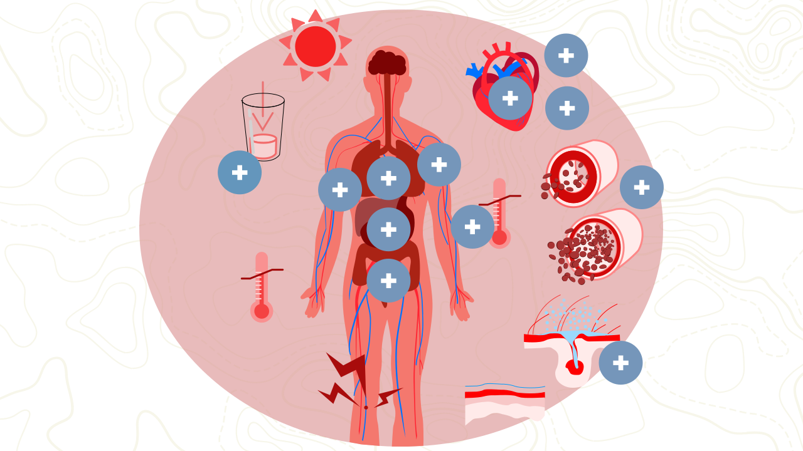
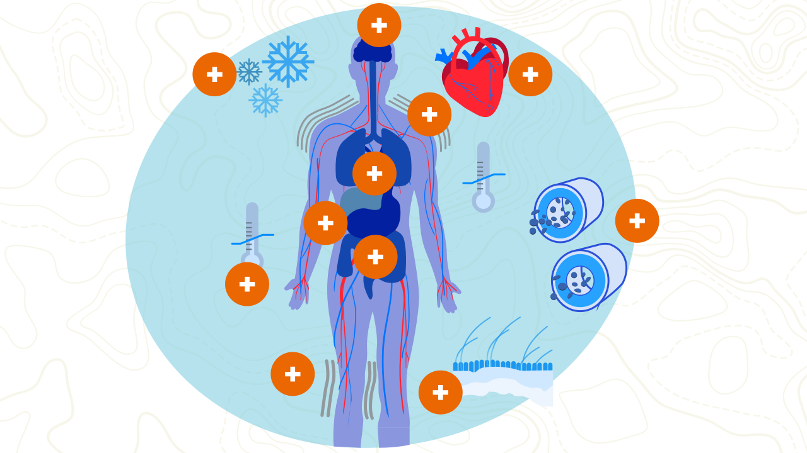
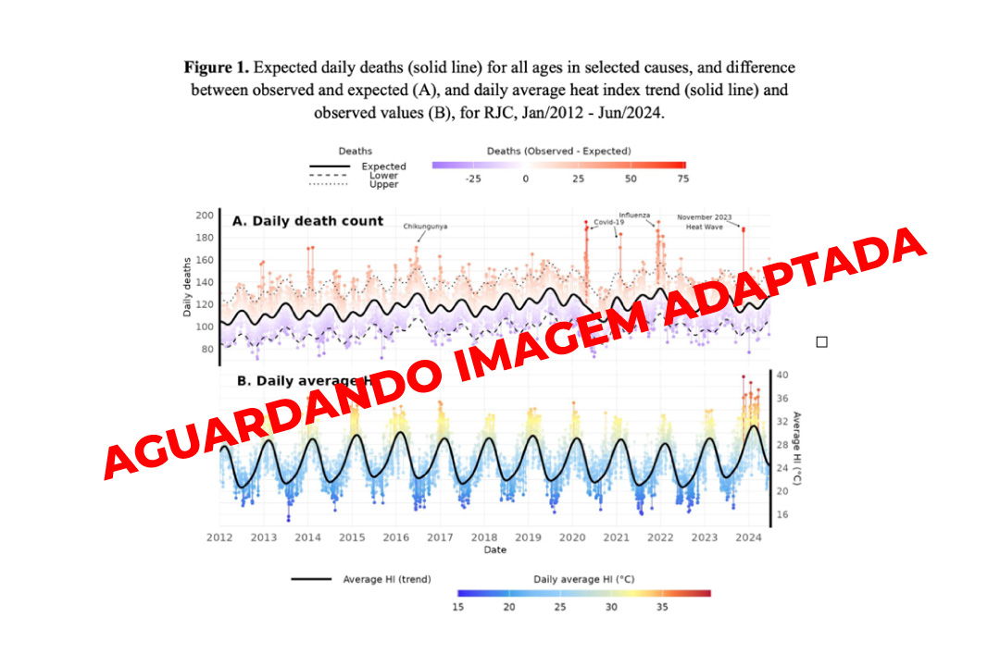

MÓDULO 4 | AULA 2 Efeitos das ondas de calor e de frio na saúde
Seja bem-vindo(a) à segunda aula do módulo IV.
Nesta etapa, vamos conhecer os efeitos de curto, médio e longo prazo das ondas de calor e de frio sobre a saúde humana.
Ao final desta aula, você estará apto(a) para:
- Descrever os principais agravos associados a temperaturas extremos; e
- Identificar os grupos populacionais mais vulneráveis e os fatores de risco associados.
Vamos lá?
Sobre as ondas de calor e de frio
Os efeitos das ondas de calor e das ondas de frio sobre a saúde humana têm sido cada vez mais estudados e pesquisados. Para compreender esses efeitos, precisamos primeiro entender o que a exposição ao calor e ao frio pode causar ao corpo humano. Para isso, precisamos relembrar alguns aspectos importantes sobre a termorregulação.
A termorregulação consiste na regulação da temperatura do corpo humano, que deve estar em torno de 36ºC e pode ser alterada por diferentes fatores.
Além da exposição ambiental a extremos de temperatura, o principal objeto dos nossos estudos aqui, a temperatura do corpo humano pode ser alterada devido a outros fatores, como a prática de exercícios físicos, a produção alterada de alguns hormônios e a exposição a situações de estresse. Quando nosso sistema nervoso identifica que estamos aumentando ou reduzindo a nossa temperatura corpórea, algumas estratégias fisiológicas são adotadas.
Nosso corpo no calor
Quando estamos expostos a altas temperaturas, o corpo humano utiliza diversos mecanismos para manter a temperatura interna estável. A regulação térmica é essencial para garantir o funcionamento adequado dos órgãos e prevenir situações como exaustão térmica ou insolação. Abaixo, são descritos os principais mecanismos de transferência de calor utilizados pelo organismo:
Condução é a troca de calor de um material para outro por meio do contato direto. Quando nosso corpo toca uma superfície mais fria, como o chão ou uma parede, o calor flui do corpo para essa superfície. Por exemplo, ao nos deitarmos em um piso frio em dias muito quentes, parte do calor corporal é transferida para o chão, ajudando a baixar a temperatura do corpo.
Convecção é a transferência de calor pelo movimento de um fluido, que pode ser o ar ou a água, entre regiões com temperaturas diferentes. No corpo humano, ocorre quando o ar quente ao redor da pele é aquecido e sobe, sendo substituído por ar mais frio. Um exemplo é o ar frio inspirado: ao ser expirado, ele está mais quente, afastando o calor do corpo. Ventiladores, por exemplo, intensificam esse processo ao aumentar o movimento do ar ao redor do corpo.
Radiação é a transferência de calor na forma de ondas eletromagnéticas (especialmente infravermelho) de um objeto mais quente para outro mais frio, sem necessidade de contato físico. Assim, em um ambiente mais frio, perdemos calor porque nosso corpo irradia energia térmica para os objetos ao redor. Em ambientes mais quentes que o corpo, ocorre o contrário: recebemos calor por radiação, contribuindo para o aumento da temperatura corporal.
Evaporação é a transformação da água líquida em vapor. No corpo humano, isso ocorre principalmente por meio da evaporação do suor produzido pelas glândulas sudoríparas. Esse é o mecanismo mais eficiente de perda de calor em altas temperaturas. Quando o suor evapora da pele, remove energia térmica, ajudando a resfriar o corpo. No entanto, em ambientes muito úmidos, a evaporação é dificultada, reduzindo a eficiência desse mecanismo e aumentando o risco de superaquecimento.
Além disso, é importante destacar que, além da temperatura, a umidade também importa nas ondas de calor. Nesse contexto, surge um questionamento:
Você sabia que o nosso corpo não responde da mesma maneira em ambientes mais ou menos úmidos, mesmo que a temperatura seja a mesma?
Como mencionamos anteriormente, a evaporação do suor é a maneira mais eficiente de resfriar o corpo. No entanto, quando estamos em um ambiente quente e muito úmido, como é comum em boa parte do verão brasileiro, não transpiramos com a mesma eficiência.

A umidade alta impede que o suor se evapore e, desse modo, impede que o nosso corpo perca calor. Nesse cenário, nosso corpo acaba se esforçando mais para reduzir o calor, aumentando a sensação de desconforto causada pelo calor e intensificando a exaustão e o mal-estar. Por outro lado, quando o ambiente está mais seco, a evaporação ocorre mais rapidamente, e a transpiração permanece ativa e eficaz na redução da temperatura corporal.
Por isso, quando pesquisadores, profissionais de saúde e gestores fazem alertas sobre níveis de calor que podem ter efeitos negativos à saúde humana, eles observam não apenas a temperatura, mas também a umidade local. Esse fator interfere diretamente nos cuidados necessários com a saúde, já que ambientes muito úmidos podem aumentar os riscos associados ao calor intenso. Entretanto, ambientes secos também exigem atenção, pois aceleram a perda de água pelo corpo e podem levar mais rapidamente à desidratação.
Veja a seguir os efeitos da exposição humana ao calor. Vale ressaltar que, caso não haja intervenção médica rápida, o conjunto desses processos pode culminar em um quadro potencialmente fatal.

É muito importante destacar o papel da hidratação. Além de ser essencial em ambientes quentes para repor o líquido perdido na tentativa de resfriar o corpo por evaporação, a hidratação também ajuda a reduzir a temperatura corporal por meio dos processos de condução e convecção.
Nosso corpo no frio
O nosso corpo também aciona mecanismos específicos para manter o calor quando estamos expostos ao frio extremo. Entre os mecanismos de preservação da temperatura corporal, o primeiro é a constrição dos vasos sanguíneos da pele, um processo chamado vasoconstrição. Quando os vasos se contraem, ocorre a diminuição da quantidade de sangue circulando próximo à superfície do corpo. Como consequência, há redução da perda de calor para o ambiente externo, ajudando a manter a temperatura interna estável. Esse redirecionamento do sangue das extremidades do corpo para proteger o funcionamento dos órgãos internos é o responsável por lábios e dedos roxos quando estamos com frio.
Outro mecanismo importante é o acionamento do “centro de produção de calor” no sistema nervoso, que desencadeia contrações musculares involuntárias, conhecidas como tremores. Quando trememos de frio, nossos músculos trabalham rapidamente, gerando calor adicional e aumentando a temperatura do corpo.
Além disso, o corpo libera hormônios que aumentam o metabolismo, como adrenalina e hormônios tireoidianos. Esse aumento do metabolismo faz com que produzamos mais calor internamente.
Veja a seguir os efeitos da exposição humana ao frio.

Com base na análise desses efeitos, é possível observar que, sem intervenção rápida, a hipotermia severa pode levar à parada cardíaca e respiratória, sendo potencialmente fatal.
Populações mais vulneráveis ao frio e ao calor
Após conhecermos em detalhe os efeitos das ondas de calor e de frio na saúde humana, podemos identificar mais facilmente os grupos populacionais mais vulneráveis aos extremos de temperatura. Além das características individuais e ocupacionais das populações expostas a ondas de calor e de frio, outros fatores influenciam os dados que essa exposição pode causar na saúde das pessoas, como o tempo de exposição.
Sabe-se que quanto mais as pessoas ficam expostas ao calor ou ao frio extremos, maiores as chances de apresentar um quadro mais grave. Além disso, o modo de vida e as vulnerabilidades socioeconômicas também influenciam os efeitos das temperaturas extremas na saúde.

Trabalhadores informais, por exemplo, que trabalham expostos à temperatura ambiente e têm dificuldade em parar de trabalhar e procurar abrigo, podem permanecer mais horas expostos a ondas de calor, com maior impacto na sua saúde.
Embora os grupos mais vulneráveis, em geral, sejam os mesmos tanto para a exposição ao frio como ao calor, as causas não são as mesmas, conforme apresentado a seguir:
A Nota Técnica n. 38/2023 do Ministério da Saúde apresenta orientações da APS para o cuidado de crianças e pessoas idosas durante períodos de ondas de calor. Aborda fatores de risco, sinais clínicos, manejo da desidratação e medidas preventivas voltadas aos grupos mais vulneráveis aos eventos climáticos extremos. Também subsidia a atuação das equipes de saúde na promoção do cuidado integral, prevenção de agravos e fortalecimento das ações de vigilância e proteção em saúde dessa população. Clique aqui e acesse.
Um triste episódio em um show internacional mudou como uma cidade precisa lidar com ondas de calor.
Em novembro de 2023, durante um show da cantora norte-americana Taylor Swift, uma ocorrência marcante chamou a atenção para os riscos associados às ondas de calor no município do Rio de Janeiro. Na ocasião, uma jovem de 23 anos, passou mal e acabou por perder a vida após permanecer várias horas exposta a temperaturas elevadas, que chegaram a 40ºC, com sensação térmica de quase 60ºC.
Até então, apesar de a cidade já enfrentar ondas de calor intensas, ainda não existia um protocolo estruturado de monitoramento e alerta para altas temperaturas. A partir desse acontecimento, pesquisadores analisaram dados históricos de clima e mortalidade para entender melhor a relação entre picos de calor e impactos à saúde.
Os resultados mostraram que, na semana do show, observou-se um aumento atípico de óbitos, comparável apenas aos períodos mais críticos das epidemias de Covid-19 e influenza, entre 2020 e 2022. Com base nessas evidências e em estudos adicionais, gestores municipais desenvolveram um protocolo de risco associado ao calor extremo. Esse sistema permite identificar níveis críticos de temperatura e definir ações preventivas, como ampliar o acesso à água potável e a áreas públicas abrigadas, inclusive em shows e outros eventos com grande concentração de pessoas e espaços públicos.
Espera-se que, com políticas de vigilância mais robustas e maior conscientização sobre os efeitos do calor extremo, situações semelhantes sejam cada vez mais evitadas, protegendo a população e fortalecendo a resposta da cidade às mudanças climáticas.

Em síntese, nesta aula vimos que a exposição a ondas de calor e de frio pode impactar diretamente a saúde humana, estando relacionada à capacidade de termorregulação do corpo, responsável por manter a temperatura em torno de 36°C.
Entendemos também que, diante de temperaturas extremas, o organismo aciona mecanismos fisiológicos para equilibrar sua temperatura, como a perda de calor no calor e a sua conservação no frio. Além disso, analisamos que fatores como tempo de exposição, condições de vida e vulnerabilidades socioeconômicas influenciam a gravidade desses impactos.
Também identificamos os grupos mais vulneráveis: idosos, pessoas com doenças crônicas, trabalhadores expostos a ambientes externos, gestantes, recém-nascidos e crianças, que exigem atenção prioritária em situações de extremos de temperatura. Por fim, compreendemos como características ambientais, como a umidade, podem intensificar os efeitos das temperaturas extremas sobre o corpo.